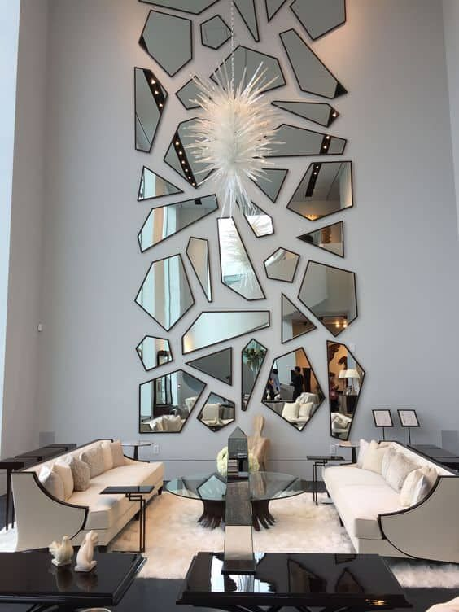
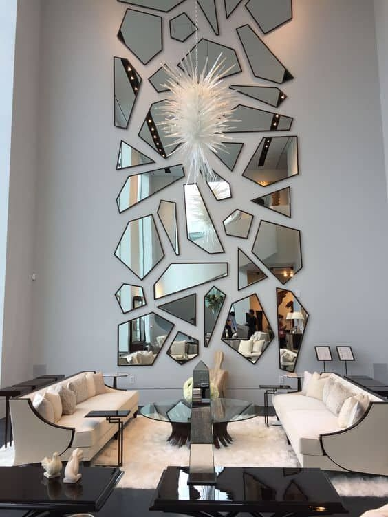

| Tipo de Espejo |
Descripción |
Usos Comunes |
| Espejo Plano |
Refleja la imagen sin distorsión. |
Baños, vestidores, decoración. |
| Espejo Convexo |
Amplía el campo de visión y distorsiona la imagen. |
Espejos de seguridad, retrovisores de automóviles. |
| Espejo Cóncavo |
Concentra la luz y puede aumentar la imagen. |
Espejos de maquillaje, telescopios. |
| Espejo de Aumento |
Proporciona una imagen ampliada. |
Maquillaje, cuidado personal. |
| Espejo Inteligente |
Incorpora tecnología para mostrar información adicional. |
Hogares inteligentes, tecnología de belleza. |

 
